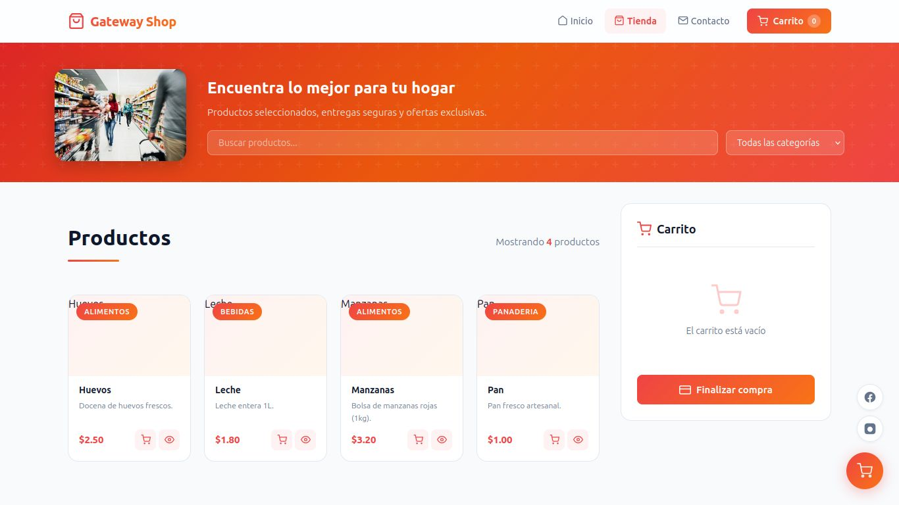
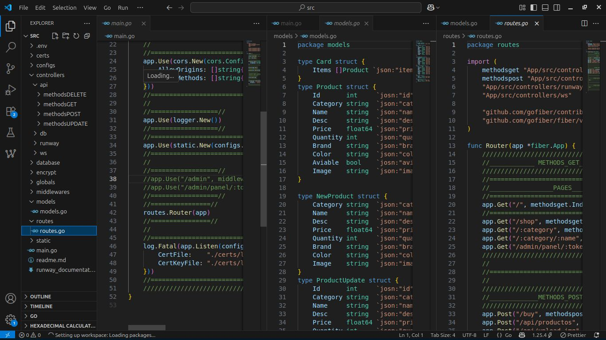
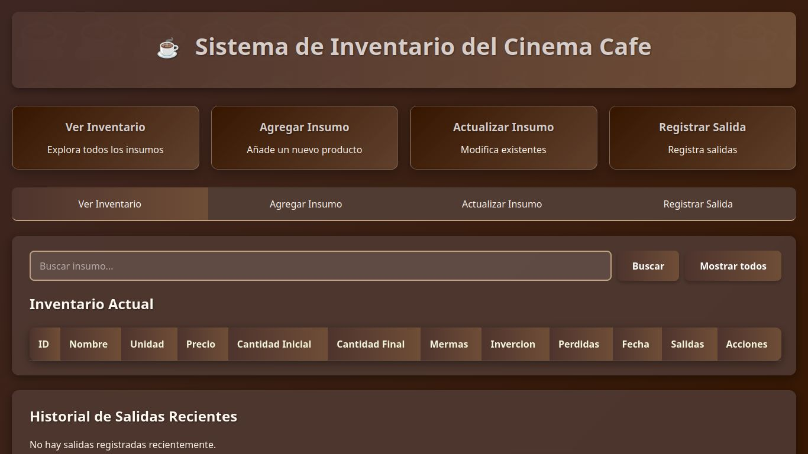
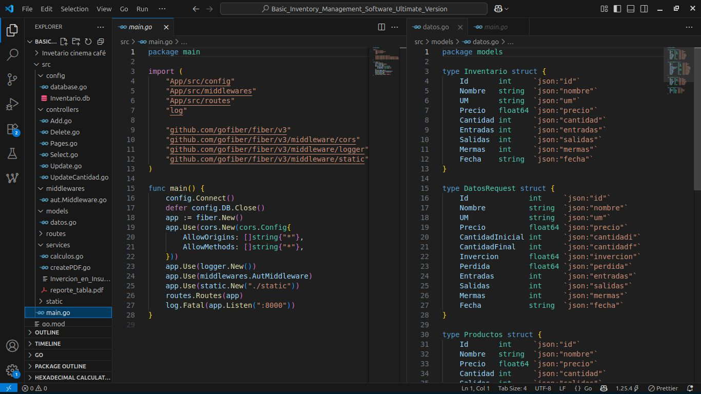
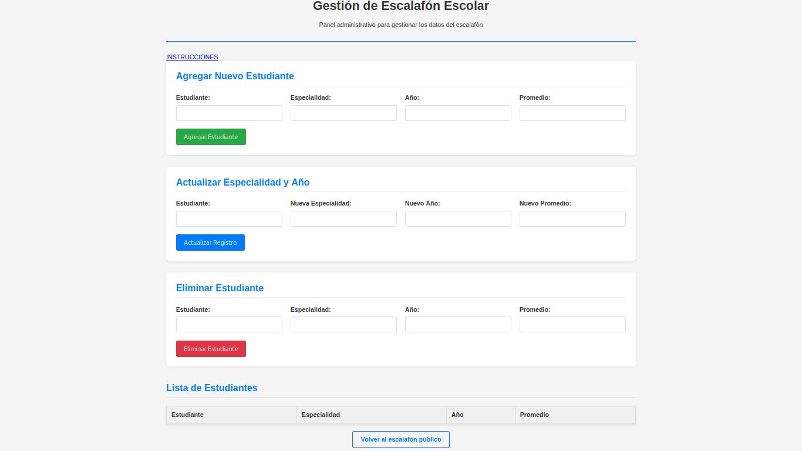
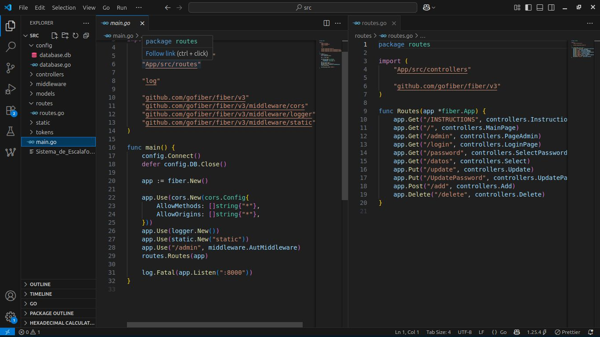
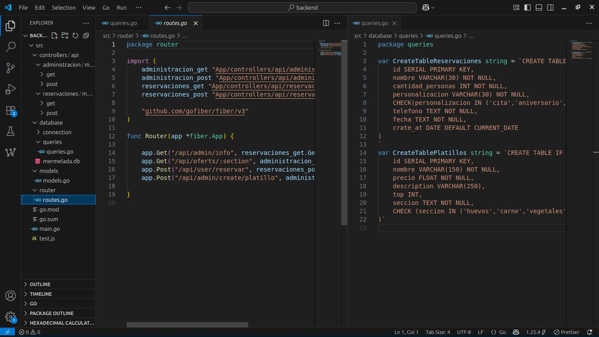

Cada uno de estos proyectos me han deado las habilidades los conocimientos y la seguridadd para diseñar e
implementar sistemas robustos y escalables
API REST para sistema de recervacion y munu de restaurante con Go + Fiber v3 y MySQL
API para un proyecto de colaboraciony practica.
Creada para la administración de un mercado con
variedad de
productos.
Creditos al desarrollador Frontend
Stack: Go, Fiber v3, MySQLSQL, Git.
Resultado: Un sistema de stock funcional para un mercado en linea. Siendo posible el filtrado
por categorias de productos


API REST de Gestión de Inventario con Go + Fiber v3 y Sqlite3
Microservicio para administración de recursos con autenticación JWT, validación de datos.
Stack: Go, Fiber v3, Sqlite3.
Resultado: respuesta promedio por debajo de 80ms en lectura bajo carga simulada.


API REST de Escalafon de Escolar con Go + Fiber v3 y Sqlite3
Sistema de Escalafon escolar JWT, validación de datos.
Stack: Go, Fiber v3, Sqlite3.
Resultado:Agilizacion del proceso de registro de notas academicas y facil visualizacion de estos


API REST para Sistema de Recervacion y menu de restaurante con Go + Fiber v3 y PostgreSQL
API para un proyecto de colaboracion.
Creada para la administración de un menu para un
restaurante y su sistema de reservacion.
Stack: Go, Fiber v3, PostgrSQL, Git.
Resultado: Facilita a los clientes gestionar sus pedidos gracias a sus consultas rapidas y un
panel dedicado para la recervacion y la vista de el menu
